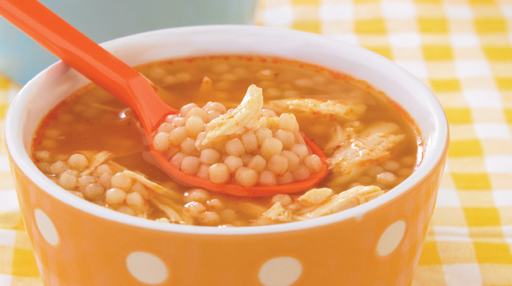

SOPALOVER
Desde que tengo memoria, mi padre solía prepararme las más deliciosas sopas de este planeta. Recetas simples, agua en una olla, un caldito de verdura para el sabor y cuando el agua rompa hervor, agregamos los fideos de preferencia. No nos podemos olvidar del toque mágico final, el huevo duro picado.
Top 3 mejores sopas de fideos:
- Sopa de fideos moñito
- Sopa de fideos municiones 
- Sopa de fideos cabello de ángel